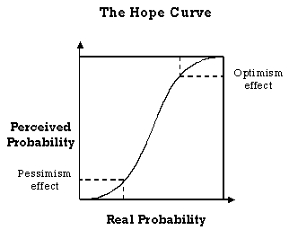

What is hope?
Hope happens when
someone sees something, decides that it is desirable, realizes that they
may not get it, but believes that there is still a chance of getting it.
To put it tersely,
though perhaps in a complex way, hope is expectation moderated by
probabilistic estimation of a desired event.
For hope to be
a strong force for tension, the person's estimation that the desired event will
occur must be both high enough for them to consider there to be a reasonable chance of it
happening, yet not so high that they become complacent.
Charles Revson,
founder of the famous Revlon cosmetics empire famously said that what he
sold was 'hope'.
Fear
Fear is a form
of negative hope. Both are forms of anticipation as we forecast the future and
experience emotions in line with our predictions.
The sliding
scale
Hope is not a single
thing. It is more of a sliding scale that ranges across a scale from virtual
certainty to utter desperation. It can range within a single conversation across this whole
spectrum. You can raise a person's hope, dash it on the rocks of uncertainty, raise it out of the
waters and toss it around until the other person will grasp at whatever straw you throw at them.
The hope curve
The actual hope
that people feel does not necessarily match the real probability of success.
Typically we feel optimistic or pessimistic at the extremes.
At zero probability,
we are realistically pessimistic, and we stay this way until there is sufficient
probability to break out of the fear of loss. As the event becomes more likely, we become
disproportionately optimistic.

Types of hope
There are (at least)
three types of hope:
Desperation
Desperate hope
is when a deep need is felt. Someone who is desperate will do almost anything
to satisfy the hope (with 'almost anything' being in proportion to the level of desperation).
Optimism
Whereas desperate
hope often has a negative connotation, optimistic hope is often positive. In
both cases, the probability of achieving the hoped-for thing can be very variable, often sitting at
a very low probability of occurring.
Realistic hope
Realistic hope
is based on a fair estimation of probabilities. Thus, if something is over (say)
50% likely, then I might realistically hope that it will happen.
Hope as a destination
Robert Louis Stevenson
said 'It is better to travel hopefully than arrive', indicating how hope
can be a pleasant in itself. In particular, hope is often tinged with the fear both that you will not
get what you want, and also that even when you achieve your goal, it will not be as perfect as
your fantasized eventualities.
As a result, many
people are happy just to hope. All you need to do is offer them this, as all
casinos do to their hapless customers. Many such punters will merrily gamble away until their
money is all gone, then return time and again just to experience that temporary thrill of hope.
So what?
Use hope in persuasion
through the non-linear relationship between perception and reality.
Build optimism by showing how real the chances of success are. Move people away from
things by highlighting the chances of failure.
Beware, however,
of betrayal effects. If the other person's hopes are dashed and you are
perceived as the culprit, then you will become the target of their revenge.
Making up
Charles Revson,
the founder of the Revlon cosmetics company, once famously commented that
what they really sold was hope. (For some it is realistic hope, for others it is perhaps more like
desperation.) Paradoxically make-up can also sow false seeds of hope in the other party. If I
wear make-up, I am actually selling myself as more than I really am. There have been many
cracks about the other person being beautiful the night before but not the morning after.
Gambling dens
As a very real
example of managed hope in action, look no further than the nearest casino or
gambling den. Casinos dangle large sums and glittering prizes whilst making the hoping as
pleasant as possible with salubrious surroundings, free drinks, attractive members of the
opposite sex and so on.
The gamblers are
trapped in a cocoon of warmth as their money is steadily leeched away from
them (note how the reality of money itself is hidden behind tokens and credit, preventing the
unreality bubble from being burst).